Manual de Marca
Identidad visual de Miami Hair Transplant. Versión 1.0 · Julio 2026. Todo lo necesario para diseñar la web, campañas y material de clínica sin romper la marca.
Identidad visual de Miami Hair Transplant. Versión 1.0 · Julio 2026. Todo lo necesario para diseñar la web, campañas y material de clínica sin romper la marca.
El logotipo combina el símbolo (folículo y cabello en trazo circular) con el lockup tipográfico HAIR TRANSPLANT MIAMI. Los archivos maestros viven en images/brand/.

La paleta sale directamente del artwork oficial: un marrón espresso casi negro como suelo y una rampa dorada de tres paradas como voz de la marca.
#2C0E0B · rgb(44,14,11)Fondo principal oscuro. 60% de la superficie de marca.#F7EDA7 · rgb(247,237,167)Extremo claro de la rampa dorada. Brillos y texto destacado sobre oscuro.#DDBF61 · rgb(221,191,97)Punto medio. Acentos, iconos y detalles sobre Espresso.#C49528 · rgb(196,149,40)Extremo oscuro de la rampa. Bordes, hairlines y sellos.#FFFFFFFondo de secciones clínicas y texto principal sobre oscuro.#8A6410Único oro aprobado para TEXTO sobre blanco (contraste AA).--brand-gradient-gold: linear-gradient(90deg, #F7EDA7 0%, #DDBF61 50%, #C49528 100%);
| Combinación | Contraste | Texto normal | Uso |
|---|---|---|---|
| Champán sobre Espresso | ≈ 13:1 | PASA AAA | Titulares y texto sobre oscuro |
| Miel sobre Espresso | ≈ 9:1 | PASA AAA | Acentos y labels sobre oscuro |
| Oro Profundo sobre Espresso | ≈ 6:1 | PASA AA | Detalles sobre oscuro |
| Espresso sobre degradado oro | ≥ 6:1 | PASA AA | Texto de botones dorados |
| Oro Tinta sobre Blanco | ≈ 5.3:1 | PASA AA | Links y acentos de texto en claro |
| Oro Profundo sobre Blanco | ≈ 2.7:1 | NO PASA | Solo decorativo, nunca texto |
El lockup del logo está compuesto en Helvetica Neue y nunca se retipea. Para todo lo demás (web, campañas, presentaciones) la voz tipográfica es Archivo (Google Fonts, variable), una grotesk del mismo linaje que escala de texto clínico a titular rotundo.
Your hair back.
H1 · Archivo 800 · clamp(2.5rem → 5rem) · tracking -0.022em · leading 1.05
Sixteen documented cases
H2 · Archivo 800 · clamp(2rem → 3.25rem) · tracking -0.02em
Every treatment starts with a scalp evaluation and an honest recommendation.
Lead · Archivo 400 · clamp(1.25rem → 1.5rem) · leading 1.5
Body: FUE hair transplants and PRP therapy performed in Miami by a board-certified practitioner, with a plan built around your hairline, your density, and your goals.
Body · Archivo 400 · 1rem–1.125rem · leading 1.6 · máx 68ch
Hair Restoration Clinic
Label · Archivo 600 · 0.75rem · MAYÚSCULAS · tracking 0.22em (eco del lockup MIAMI)
Recetas canónicas incluidas en css/brand-tokens.css. El botón principal lleva el degradado oficial con texto Espresso encima.
| Archivo | Qué es |
|---|---|
| images/brand/logo-gold.svg | Logo oro sobre transparente (versión principal, fondos oscuros) |
| images/brand/logo-white.svg | Logo blanco sobre transparente (fondos oscuros y fotografía) |
| images/brand/logo-color.svg | Pieza cerrada con fondo Espresso incluido (avatares, sellos) |
| css/brand-tokens.css | Tokens de color, degradado, tipografía y recetas de botones listos para importar |
| brand.html | Este manual |